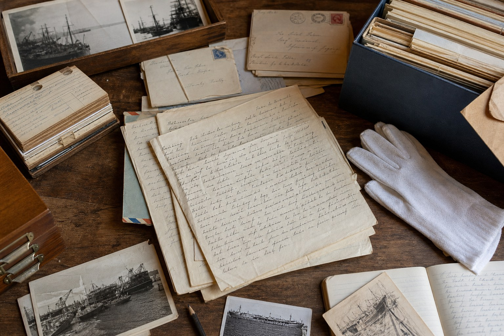
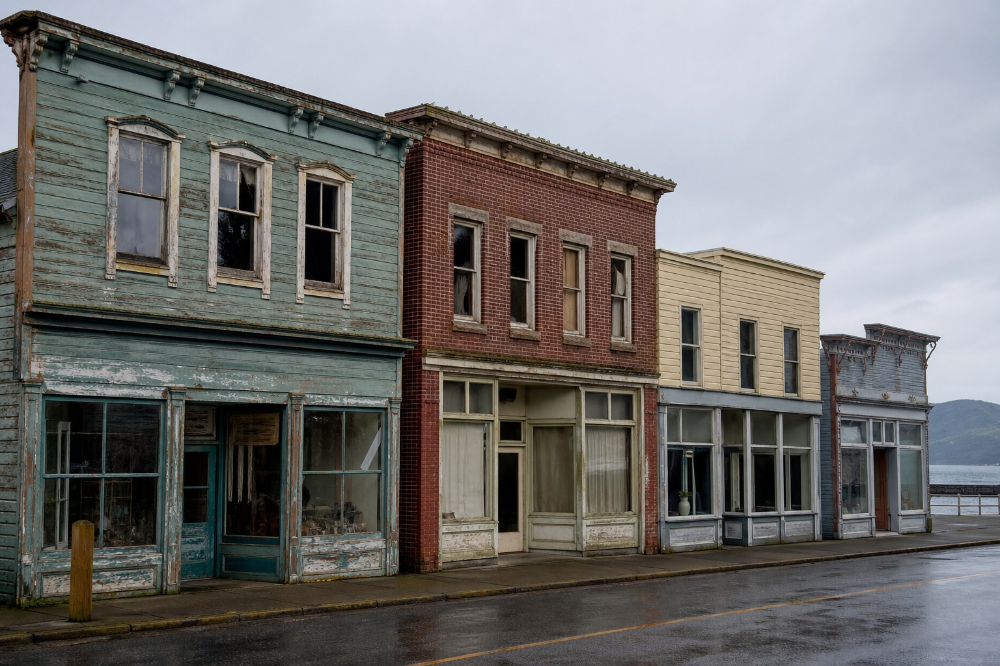
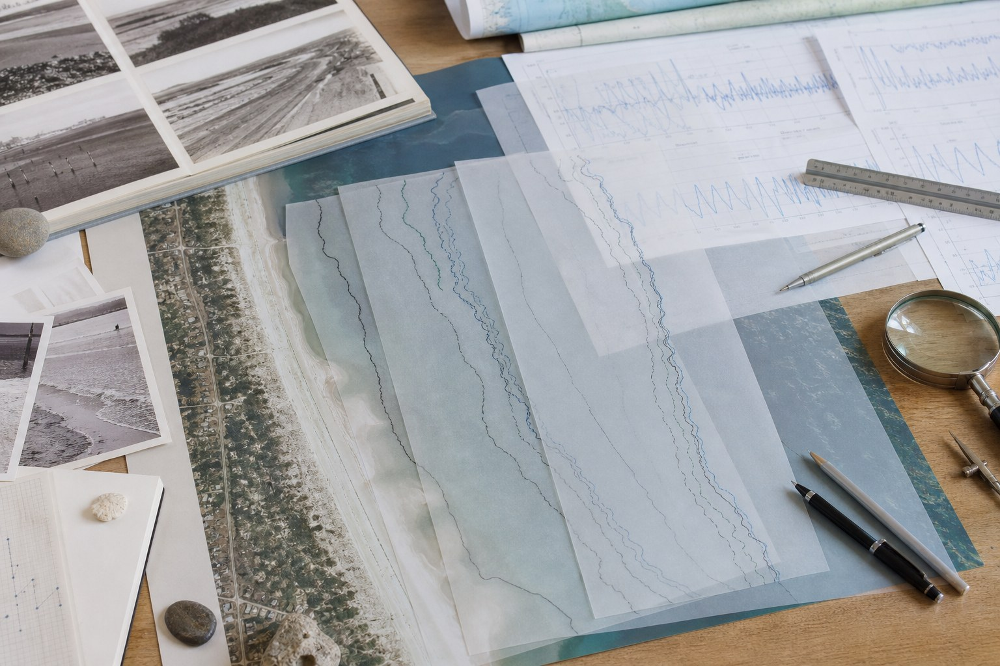

The Harbor Letter Archive

The Harbor Letter Archive organizes letters written by harbor workers between 1940 and 1960.
Role: Digital Archive Designer
Focus: Metadata, navigation, and accessibility
Mara Voss
Mara's projects explore digital preservation, local history, interactive storytelling, and accessible web design.

The Harbor Letter Archive organizes letters written by harbor workers between 1940 and 1960.
Role: Digital Archive Designer
Focus: Metadata, navigation, and accessibility

Vanishing Storefronts documents local businesses that have closed or changed over time in Port Alder.
Role: Researcher and Content Designer
Focus: Photography, interviews, and local history
Weather Room is an interactive story that combines weather records, radio clips, maps, and diary entries from a fictional coastal storm.
Role: Interactive Media Designer
Focus: Narrative structure, audio, and archival media

Tide Marks presents fifty years of tide records and shoreline changes through a simple digital visualization.
Role: Information Designer
Focus: Data organization and visual explanation